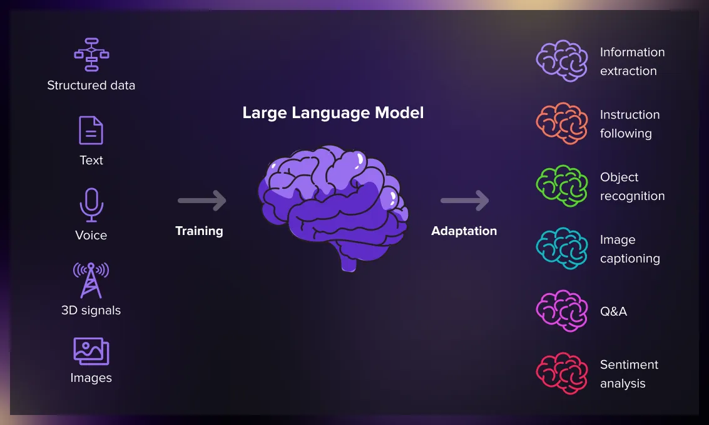

Уявіть собі чарівну книгу, яка прочитала майже весь інтернет і тепер може спілкуватися з вами, писати тексти та відповідати на питання.
↓ Гортайте донизу ↓
Модель "читає" гігантську бібліотеку текстів та книг, щоб вивчити мову, факти та закономірності.
Це ваше завдання або питання до моделі. Чим чіткіший запит, тим краща відповідь.
Модель генерує текст, передбачаючи наступне найбільш імовірне слово, створюючи осмислену відповідь.

Щоб прочитати обсяг даних, на яких навчається одна велика LLM, людині знадобилося б кілька тисяч років.
Іноді моделі "галюцинують" — впевнено видають неправдиву інформацію. Тому завжди перевіряй важливі факти!
Ти вже користуєшся схожими технологіями: голосові асистенти, перекладачі, розумний пошук та навіть автозаповнення слів у телефоні.